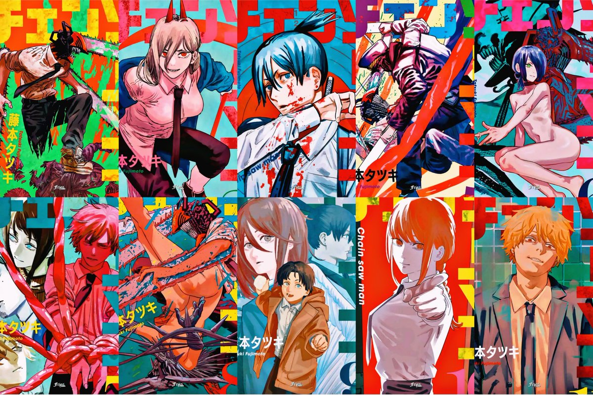
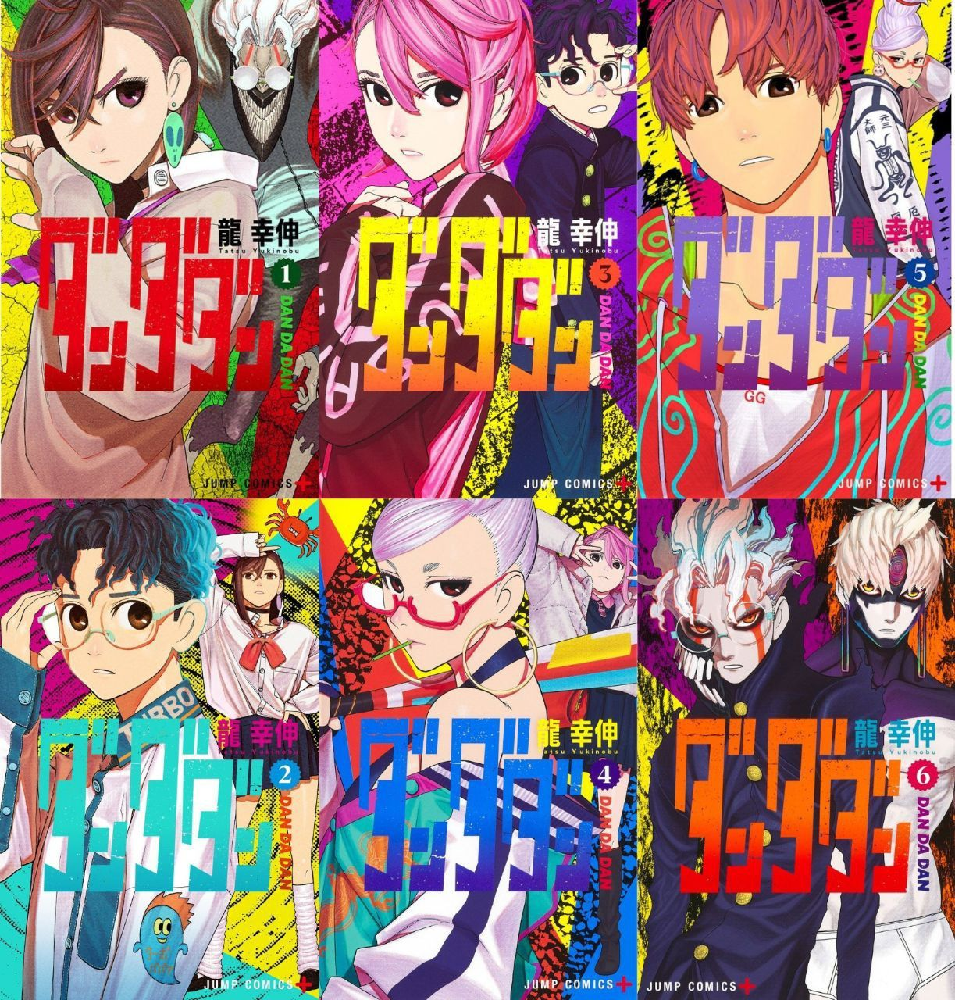
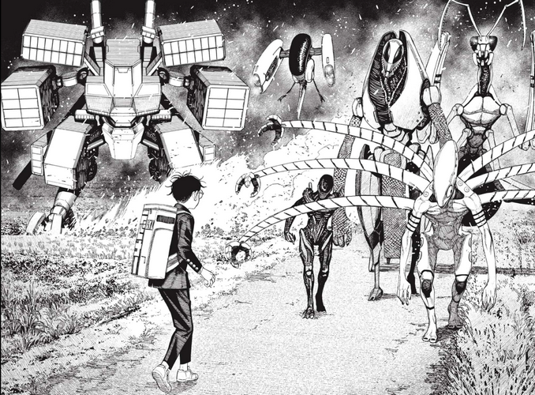
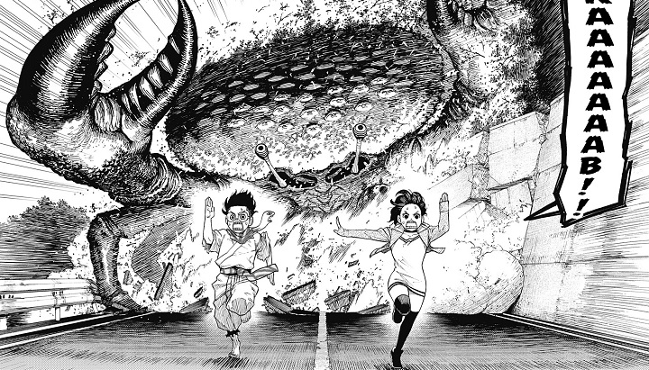

Chainsaw Man:
Es una serie de manga japonesa escrita e ilustrada por Tatsuki Fujimoto.
Sinopsis:
Cuando su padre murió, Denji se vio obligado a saldar una gran deuda y no había forma de pagarla. Pero gracias a la ayuda del demonio perro llamado Pochita, Denji es capaz de sobrevivir convirtiéndose en un cazador de demonios a sueldo haciendo trabajos para los Yakuza.
Pero cuando Denji en un trabajo termina siendo asesinado por un demonio, Pochita se sacrifica para salvar su vida y revivirlo en un híbrido Demonio-Humano llamado Chainsaw Man. Después de su transformación, es reclutado rápidamente por Makima y obligado a unirse a los cazadores de demonios de seguridad pública bajo amenaza de exterminio ahora que técnicamente es un demonio. Viviendo cómodamente por primera vez en su vida, Denji lucha por determinar sus sueños y establecer relaciones significativas mientras mata demonios y trabaja junto a otros cazadores.
Información Tomos publicados: 13
Inicio de publicación: 3 de diciembre de 2018
Total capítulos: 121
Adaptación: siPortadas Chainsaw Man
Unete a la comunidad de Chainsaw Man- 01. Perro y Motosierra (4 de marzo de 2019)
- 02. Motosierra vs. Murciélago (2 de mayo de 2019)
- 03. Matar a Denji (2 de agosto de 2019)
- 04. La pistola es más poderosa (4 de octubre de 2019)
- 05. Menor (4 de enero de 2020)
- 06. Boom Boom Boom (4 de marzo de 2020)
- 07. En un sueño (4 de junio de 2020)
- 08. Super lío (9 de agosto de 2020)
- 09. Baño (4 de noviembre de 2020)
- 10. Sentimientos de un perro (4 de enero de 2021)
- 11. Tú puedes, motosierra (4 de marzo de 2021)
- 12. Ave y Guerra (4 de octubre de 2022)
- 13. Spoiler (4 de enero de 2023)
 Trailer de la Adaptación:
Jujutsu Kaisen:
Jujutsu Kaisen es una serie de manga japonesa escrita e ilustrada por Gege Akutami.
Sinopsis:
Yuji Itadori es un genio en el atletismo pero es alguien sin ningún interés en especial contento en el Club de Investigación Oculta. Aunque solo está en el club por diversión, ¡las cosas se ponen serias cuando aparece un verdadero espíritu en la escuela!
Cuando su abuelo está en su lecho de muerte, Yuji le hace una promesa; que hará actos amables para que muera rodeado de sus seres queridos, a diferencia de su abuelo.Sin embargo, la vida de Yuji da un giro al conocer a Megumi Fushiguro, un hechicero que intenta recuperar un objeto maldito. Cuando los amigos de Yuji abren el objeto maldito que encontraron, las cosas se complican cuando los espíritus malditos que engendró atacan la escuela. Como Fushiguro y Yuji son casi derrotados por uno de los espíritus, Yuji se traga el objeto maldito y gana su poder. Como resultado, Yuji es maldecido por el objeto y es arrastrado al emocionante mundo de hechicería y espíritus malditos de Fushiguro.
Información Tomos publicados: 23
Inicio de publicación: 4 de diciembre de 2018
Total capítulos: 213
Adaptación: siPortadas Jujutsu Kaisen
Unete a la comunidad de Jujutsu Kaisen- 00. Oscuridad deslumbrante (4 de diciembre de 2018)
- 01. Ryōmen Sukuna (4 de julio de 2018)
- 02. Útero temible (4 de septiembre de 2018)
- 03. Pez joven y castigo inverso (4 de diciembre de 2018)
- 04. ¡Te voy a matar! (4 de marzo de 2019)
- 05. Evento de buena voluntad de la escuela hermana de Kyoto (4 de mayo de 2019)
- 06. Flash negro (4 de julio de 2019)
- 07. El origen de la obediencia (4 de octubre de 2019)
- 08. Inventario oculto (4 de enero de 2020)
- 09. Muerte prematura (4 de enero de 2020)
- 10. Festival de la tarde (4 de marzo de 2020)
- 11. El incidente de Shibuya: Parte 1 (4 de junio de 2020)
- 12. El incidente de Shibuya: Parte 2 (4 de agosto de 2020)
- 13. El incidente de Shibuya: Parte 3 (2 de octubre de 2020)
- 14. El incidente de Shibuya: Parte 4 (4 de enero de 2021)
- 15. El incidente de Shibuya: Parte 5 (4 de marzo de 2021)
- 16. El incidente de Shibuya: Parte 6 (4 de junio de 2021)
- 17. Preparación perfecta (4 de octubre de 2021)
- 18. Pasión (25 de diciembre de 2021)
- 19. Colonia N°1 de Tokyo: Hombre enojado (4 de abril de 2022)
- 20. Colonia de Sendai: Semi-Fiesta (4 de agosto de 2022)
- 21. Colonia N°2 de Tokio: Fortuna (2 de diciembre de 2022)
- 22. La colonia de Sakurajima: Reencarnación (3 de marzo de 2023)

Trailer de la Adaptación:
Dandadan:
Dandadan es una serie de manga japonesa guionizada y dibujada por Yukinobu Tatsu.
Sinopsis:
Momo Ayase y Okarun están en lados opuestos del espectro paranormal con respecto a lo que creerán y lo que no. ¡Su búsqueda para demostrar que el otro está equivocado los lleva por un camino de enamoramientos secretos y batallas paranormales en las que tendrán que participar para creer!.
Información Tomos publicados: 9
Inicio de publicación: 6 de abril de 2021
Total capítulos: 95
Adaptación: noPortadas Dandadan
Unete a la comunidad de Dandadan- 01. 4 de agosto de 2021
- 02. 4 de octubre de 2021
- 03. 3 de diciembre de 2021
- 04. 4 de marzo de 2022
- 05. 2 de mayo de 2022
- 06. 4 de agosto de 2022
- 07. 4 de octubre de 2022
- 08. 4 de enero de 2023
- 09. 3 de marzo de 2023
 Imagenes del Manga:

 